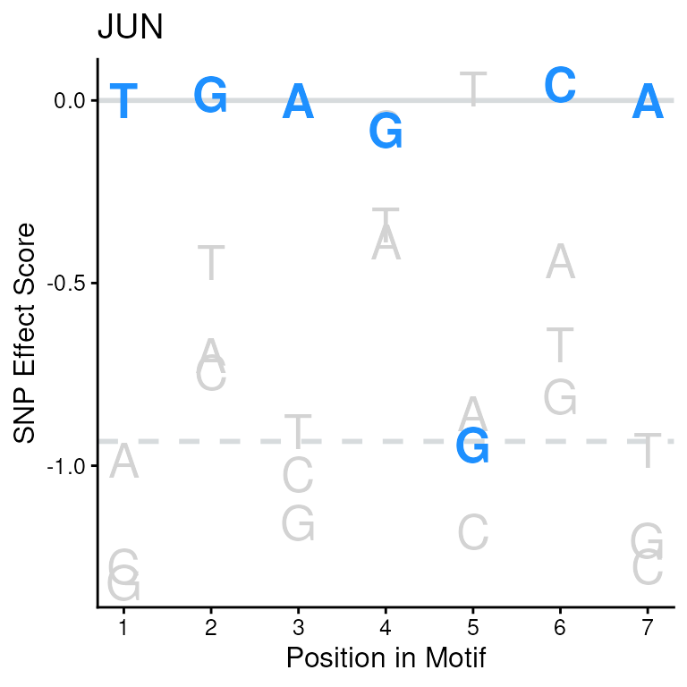
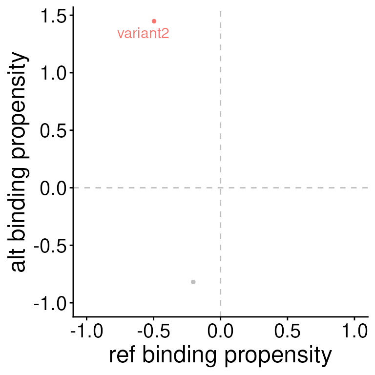

library(VariantAnnotation)
library(GenomicRanges)
library(BSgenome.Hsapiens.UCSC.hg19)
library(SEMplR)SNP Effect Matrices
SEMplR uses SNP Effect Matrices (SEMs) to score potential motifs.
These are matrices contain binding affinity scores and have rows equal
to the length of the motif and a column for each nucleotide. SEMs are
produced by SEMpl, but a default set of 223 are included with this
package in the SEMC data object. A full list of the
transcription factors included in this default set can be found here
or by running semData(SEMC).
SEMs are stored inside a SNPEffectMatrix object and sets
of SEMs are stored in a SNPEffectMatrixCollection. The
default collection can be loaded with:
data(SEMC)Printing the SNPEffectMatrixCollection, we can see that
this object has 2 slots. The first holds the
SNPEffectMatrix objects with the matrices and baseline
information for each motif. The second slots holds meta data for each
SEM. This object contains 223 SEMs and 12 meta data features for
each.
SEMC
#> An object of class SNPEffectMatrixCollection
#> SEMs(223): TFAP2B, ARNT ... ZNF18, ZSCAN4
#> semData(12): transcription_factor, ensembl_id ... dnase_ENCODE_accession, PWM_sourceWe can view the SEM meta data slot with the semData
function.
semData(SEMC)
#> Key: <transcription_factor>
#> transcription_factor ensembl_id
#> <char> <char>
#> 1: AHR ENSG00000106546
#> 2: AHR:ARNT:HIF1A ENSG00000106546;ENSG00000143437;ENSG00000100644
#> 3: ARID3A ENSG00000116017
#> 4: ARNT ENSG00000143437
#> 5: ARNTL ENSG00000133794
#> ---
#> 219: ZFX ENSG00000005889
#> 220: ZNF18 ENSG00000154957
#> 221: ZNF217 ENSG00000171940
#> 222: ZNF281 ENSG00000162702
#> 223: ZSCAN4 ENSG00000180532
#> ebi_complex_ac uniprot_ac PWM_id
#> <char> <char> <char>
#> 1: P35869 M00778
#> 2: P35869;P27540;Q16665 M00976
#> 3: Q99856 MA0151.1
#> 4: P27540 ARNT_HUMAN.H11MO.0.B
#> 5: O00327 BMAL1_HUMAN.H11MO.0.A
#> ---
#> 219: P17010 ZFX_HUMAN.H11MO.0.A
#> 220: P17022 ZNF18_HUMAN.H11MO.0.C
#> 221: O75362 M01306
#> 222: Q9Y2X9 ZN281_HUMAN.H11MO.0.A
#> 223: Q8NAM6 Zscan4_pwm_secondary
#> SEM SEM_baseline cell_type neg_log10_pval
#> <char> <num> <char> <num>
#> 1: M00778.sem -0.6717610 HepG2 18.350950
#> 2: M00976.sem -0.5938010 HepG2 14.290190
#> 3: MA0151.1.sem -0.4020880 HepG2 2.980258
#> 4: ARNT_HUMAN.GM12878.sem -1.8632604 GM12878 12.081160
#> 5: BMAL1_HUMAN.HepG2.sem -1.5977194 HepG2 20.220840
#> ---
#> 219: ZFX_HUMAN.HepG2.sem -0.2478717 HepG2 3.443155
#> 220: ZNF18_HUMAN.HEK293.sem -1.6459529 HEK293 3.793244
#> 221: M01306.sem -0.4596240 GM12878 2.843803
#> 222: ZN281_HUMAN.HepG2.sem -0.3926150 HepG2 3.428189
#> 223: ZSCAN4_secondary.sem -2.9110180 HEK293 11.973690
#> chip_ENCODE_accession dnase_ENCODE_accession PWM_source
#> <char> <char> <char>
#> 1: ENCFF242PUG ENCFF001UVU TRANSFAC
#> 2: ENCFF242PUG ENCFF001UVU TRANSFAC
#> 3: ENCFF460WFF ENCFF001UVU JASPAR
#> 4: ENCFF538DNI ENCFF759OLD HOCOMOCOv11
#> 5: ENCFF363NHH ENCFF897NME HOCOMOCOv11
#> ---
#> 219: ENCFF329DCV ENCFF897NME HOCOMOCOv11
#> 220: ENCFF888BHA ENCFF285OXK HOCOMOCOv11
#> 221: ENCFF807UJN ENCFF097LEF TRANSFAC
#> 222: ENCFF948PYK ENCFF897NME HOCOMOCOv11
#> 223: ENCFF485WHZ ENCFF910QHN UNIPROBEWe can access all SEMs in the collection the with the function
getSEMs() or some subset of motifs by specifying a vector
of semIds in the semId parameter. All semIds can be viewed
in the transctiption_factor column of the meta data. The
resulting SNPEffectMatrix object contains the semId, the
baseline value used for normalization, and the SEM that SEMplR will use
to score binding affinity.
getSEMs(SEMC, semId = "JUN")
#> An object of class SNPEffectMatrix
#> semId: JUN
#> baseline: -0.933424
#> sem:
#> A C G T
#> <num> <num> <num> <num>
#> 1: -0.985316 -1.2757100 -1.3195100 0.0000000
#> 2: -0.697860 -0.7446700 0.0162566 -0.4440620
#> 3: 0.000000 -1.0239300 -1.1553300 -0.9076800
#> 4: -0.386240 -0.0771875 -0.0818006 -0.3410950
#> 5: -0.857635 -1.1799200 -0.9421760 0.0310366
#> 6: -0.437828 0.0445882 -0.8110000 -0.6691400
#> 7: 0.000000 -1.2758200 -1.2047200 -0.9583980Scoring Binding
Prepare Inputs
To calculate binding affinity for a given loci in the genome, we
first make a GRanges object for that location. In this
example, we will score a location on chromosome 12 of the human
genome.
# create a GRanges object
gr <- GenomicRanges::GRanges(
seqnames = "chr12",
ranges = 94136009
)Scoring
This GRanges object is passed to the
scoreBinding() function along with the collection of SEMs
and a BSgenome object.
Optionally, a nFlank parameter can be specified to
dictate the number of nucleotides to flank each side of the sequence for
the supplied position. By default, the number of nucleotides added will
be the minimum number necessary to score the longest SEM.
A seqId parameter may also be used to specify a meta
data column in the GRanges object to use as a unique
identifier. Otherwise, a unique identifier will be created from
positional information.
The resulting data object is a SEMplScores object that
stores information about the scored range and its associated sequence,
the SEM meta data, and scoring information.
Please see the (Scoring method)[#scoring-method] section below for details on how sequences are scored with SEMs.
# calculate binding propensity
sb <- scoreBinding(x = gr, sem = SEMC, genome = Hsapiens)
sb
#> An object of class SEMplScores
#> ranges(1): chr12:94136009
#> semData(12): transcription_factor, ensembl_id ... dnase_ENCODE_accession, PWM_source
#> scores(223):
#> seqId SEM score scoreNorm index seq
#> <char> <char> <num> <num> <int> <char>
#> 1: chr12:94136009 TFAP2B -1.689754 -0.3068238 15 GCTTTGAGGC
#> 2: chr12:94136009 ARNT -6.892799 -0.9693833 17 TTTGAGGCA
#> 3: chr12:94136009 ATF1 -7.079925 -0.9420095 16 CTTTGAGGCAT
#> 4: chr12:94136009 ATF2 -4.890126 -0.9098440 16 CTTTGAGGCAT
#> 5: chr12:94136009 ATF3 -8.605675 -0.9885365 14 GGCTTTGAGGC
#> ---
#> 219: chr12:94136009 ZBTB7A -1.859506 -0.6349682 12 AAGGCTTTG
#> 220: chr12:94136009 ZFX -1.459472 -0.5682106 19 TGAGGCATCT
#> 221: chr12:94136009 ZNF281 -4.347612 -0.9355197 8 GGAGAAGGCTTTGAG
#> 222: chr12:94136009 ZNF18 -5.410220 -0.9264060 15 GCTTTGAGGCAT
#> 223: chr12:94136009 ZSCAN4 -15.439087 -0.9998307 15 GCTTTGAGGCATCTGCWe can access this scores table with the scores()
function and see that we have a row for each variant and SEM
combination. The scoring results has 6 columns:
varId: unique id of the variant as defined in the
idcolumn of the inputGRangesorVRangesobject. If not defined, in theseqIdparameter of thescoreBindingfunction, a custom unique identifier is generated in the format [seqname]:[range]semId: the unique identifier of the SEM
score: the raw (unnormalized) binding affinity score for the reference and alternative alleles respectively
scoreNorm : the normalized binding affinity score for the reference and alternative alleles respectively. More positive scores predict TF binding and more ngative scores predict no TF binding.
index: The position of the optimally scored sequence in the scored sequence.
seq: the optimally scored sequence for the reference and alternative alleles respectively
scores(sb)
#> seqId SEM score scoreNorm index seq
#> <char> <char> <num> <num> <int> <char>
#> 1: chr12:94136009 TFAP2B -1.689754 -0.3068238 15 GCTTTGAGGC
#> 2: chr12:94136009 ARNT -6.892799 -0.9693833 17 TTTGAGGCA
#> 3: chr12:94136009 ATF1 -7.079925 -0.9420095 16 CTTTGAGGCAT
#> 4: chr12:94136009 ATF2 -4.890126 -0.9098440 16 CTTTGAGGCAT
#> 5: chr12:94136009 ATF3 -8.605675 -0.9885365 14 GGCTTTGAGGC
#> ---
#> 219: chr12:94136009 ZBTB7A -1.859506 -0.6349682 12 AAGGCTTTG
#> 220: chr12:94136009 ZFX -1.459472 -0.5682106 19 TGAGGCATCT
#> 221: chr12:94136009 ZNF281 -4.347612 -0.9355197 8 GGAGAAGGCTTTGAG
#> 222: chr12:94136009 ZNF18 -5.410220 -0.9264060 15 GCTTTGAGGCAT
#> 223: chr12:94136009 ZSCAN4 -15.439087 -0.9998307 15 GCTTTGAGGCATCTGCWe can subset these scores to just see results for the JUN motif and we see that the normalized score, in the scoreNorm column, is negative.
We can visualize this sequence on the SEM score for each nucleotide position and see which nucleotides are contributing to this negative score.
# subset JUN score
jun_score <- scores(sb)[SEM == "JUN"]
jun_score
#> seqId SEM score scoreNorm index seq
#> <char> <char> <num> <num> <int> <char>
#> 1: chr12:94136009 JUN -0.9631318 -0.02038131 19 TGAGGCA
# plot the JUN motif with the scored sequence
plotSEM(SEMC,
motif = "JUN",
motifSeq = jun_score$seq
)
Enrichment
When scoring large sets of loci, you can also use SEMplR to predict if some transcription factors are enriched for binding, bound more than expected, within the loci of interest.
Here, we will demonstrate this analysis with simulated data. We will generate and score a set of 1000 sequences. 200 of which will be generated using the JUN SEM to generate likely binding sequences. The remaining 800 sequences will be completely random.
Prepare Inputs
Expand the section below to see the code used to generate these sequences.
See code used to generate simulated sequences
# create random sequences weighted by ppm probabilities
simulatePPMSeqs <- function(ppm, nSeqs) {
ppm_t <- t(ppm)
position_samples <- lapply(
seq_len(nrow(ppm_t)),
function(i) {
sample(colnames(ppm_t),
size = nSeqs,
replace = TRUE,
prob = ppm_t[i, ]
)
}
)
rand_pwm_seq_mtx <- position_samples |>
unlist() |>
matrix(ncol = nrow(ppm_t), nrow = nSeqs)
rand_pwm_seqs <- apply(
rand_pwm_seq_mtx, 1,
function(x) paste0(x, collapse = "")
)
return(rand_pwm_seqs)
}
# generate DNA sequences
simulateRandSeqs <- function(seqLength, nSeqs = 1) {
bps <- c("A", "C", "G", "T")
seqs <- sample(bps,
replace = TRUE,
size = seqLength
) |>
stringi::stri_c(collapse = "") |>
replicate(n = nSeqs)
return(seqs)
}
ppm <- convertSEMsToPPMs(getSEMs(SEMC, "JUN"))[[1]]
# simulate sequences from the JUN PPM
sim_seqs <- simulatePPMSeqs(ppm = ppm, nSeqs = 200)
# add flanks to the simulated sequences to make them 3x the length of the motif
sim_seqs <- lapply(
sim_seqs,
function(x) {
paste0(
simulateRandSeqs(seqLength = ncol(ppm)), x,
simulateRandSeqs(seqLength = ncol(ppm))
)
}
) |>
unlist()
# generate random DNA sequences
rand_seqs <- simulateRandSeqs(seqLength = ncol(ppm) * 3, nSeqs = 800)Scoring
We have two vectors of sequences, sim_seqs and
rand_seqs. They contain 200 and 800 sequences respectively.
All sequences are 21 nucleotides in length.
We will combine all sequences into a single vector and pass this
vector of sequences to scoreBinding. Because we did not
pass positional/range information, this function will now only return
the scoring table.
# combine all sequences into a single vector
all_seqs <- c(sim_seqs, rand_seqs)
sb <- scoreBinding(
x = all_seqs,
sem = SEMC, genome = BSgenome.Hsapiens.UCSC.hg19::Hsapiens
)
sb
#> seqId SEM score scoreNorm index seq
#> <char> <char> <num> <num> <int> <char>
#> 1: 1 TFAP2B -2.160351 -0.4997585 5 GCATGAGACA
#> 2: 2 TFAP2B -2.973604 -0.7153140 12 TCATGAGACC
#> 3: 3 TFAP2B -3.292712 -0.7718055 9 GACTAATGAT
#> 4: 4 TFAP2B -3.402059 -0.7884620 9 GATTAACGCT
#> 5: 5 TFAP2B -3.564211 -0.8109504 5 GCATGAATAA
#> ---
#> 222996: 996 ZSCAN4 -15.105340 -0.9997866 3 AAGTCAACAAGTCCAG
#> 222997: 997 ZSCAN4 -13.120222 -0.9991553 5 AAGACTGCAAACAATC
#> 222998: 998 ZSCAN4 -16.617743 -0.9999252 4 ATTTGCGAAGGGCTTC
#> 222999: 999 ZSCAN4 -16.417904 -0.9999141 1 CTGTAGATCTCAGCAC
#> 223000: 1000 ZSCAN4 -17.994440 -0.9999712 5 CAGATCGGTTAGATGCTest for Enrichment
The results of scoreBinding can be passed directly to
the enrichSEMs function along with our collection of SEMs,
and the sequences we scored.
Optionally, we can provide a background set of sequences or ranges
for this analysis. If none is provided, enrichSEMs will
scramble the scored sequences provided to use as a background.
enrichSEMs performs a binomal test to determine if any
of the transcription factors scored are bound more than expected by
chance.
e <- enrichSEMs(sb, sem = SEMC, seqs = all_seqs)
#> Building background set (this may take several minutes) ...
# order the results by adjusted pvalue
head(e[order(padj, decreasing = FALSE)])
#> SEM pvalue padj n_bound n_bound_bg
#> <char> <num> <num> <int> <int>
#> 1: JUN 1.521416e-99 3.392757e-97 159 16
#> 2: FOSL1 2.805619e-68 3.128265e-66 69 2
#> 3: JUND 2.010221e-40 1.494264e-38 42 1
#> 4: JUNB 6.994487e-28 3.899427e-26 26 0
#> 5: FOSL2 2.767490e-22 1.234301e-20 22 0
#> 6: ZNF217 1.806509e-16 6.714191e-15 56 14The resulting columns contain the p-value from the binomal test, the Benjamini & Hochberg ajusted p-value, and the number of sequences where each TF was predicted to be bound in the foreground set (n_bound) and the background set (n_bound_bg).
Visualization
While JUN was the top significant SEM of our enrichment analysis, there are also several other significant SEMs. Because some motif sequences can be very similar, this is not unexpected.
SEMplR’s plotEnrich function takes this motif
relatedness into account when visualizing these enrichment results. SEMs
are clustered by similarity and plotted on a dendrogram so similar
motifs are plotted near eachother.
The heatmap plots the -log10 adjusted pvalue of the binomial test ( -log10(padj) ) and the TFs are colored according to an adjusted pvalue threshold.
plotEnrich(e, sem = SEMC,
threshold = 0.05, method = "WPCC",
pvalRange = c(0, 50)
)Scoring Variants
SEMplR also provides functionality for scoring variants, comparing TF binding between alleles, and helping identify TFs whose binding is gained or lost with genetic variation.
Prepare Inputs
First, we will define the variants we want to score. Variants can be
supplied to SEMplR as either a VRanges or a
GRanges object. If using VRanges alleles must
be stored in the ref and alt parameters. If
using GRanges the alleles should be stored in seperate
metadata columns.
Insertions and deletions should be specified by an empty character vector in the appropriate allele.
Optionally, an id column can be defined in the object
metadata to be used as a unique identifier for each variant.
Scoring
The scoreVariants function scores each allele of each
variant against every SEM provided. From the resulting data object, we
can see that we scored 2 variants, the SEM meta data stored in the
object has 13 fields, and we have 446 rows in the scores
results table.
There is a row in the scores table for each variant/SEM
combination. Here we scored 2 variants x 223 SEMs to get 446 rows.
sempl_results <- scoreVariants(
x = vr,
sem = SEMC,
genome = BSgenome.Hsapiens.UCSC.hg38::Hsapiens,
varId = "id"
)
#> Warning: Allele 'G' or 'C' does not match reference sequence 'T' in
#> chr12:94136009
sempl_results
#> An object of class SEMplScores
#> ranges(2): variant1, variant2
#> semData(12): transcription_factor, ensembl_id ... dnase_ENCODE_accession, PWM_source
#> scores(446):
#> varId semId refSeq altSeq refScore
#> <char> <char> <char> <char> <num>
#> 1: variant1 AHR GTTGTTTAACA TGTTCTTTAAC -1.2300844
#> 2: variant1 AHR:ARNT:HIF1A TGTTTAACA TTCTTTAAC -1.3623427
#> 3: variant1 ARID3A GTTTAA TTCTTT -0.8912875
#> 4: variant1 ARNT TTGTTTAAC TGTTGTTCT -5.0484252
#> 5: variant1 ARNTL TTGTTGTTGTT TTGTTGTTCTT -6.8156452
#> ---
#> 442: variant2 ZFX TTAATCCTCT ATAATCCTCT -1.4077719
#> 443: variant2 ZNF18 TATTTAATCCTC TATATAATCCTC -6.5167904
#> 444: variant2 ZNF217 AATTATTT AATTATAT -0.7999384
#> 445: variant2 ZNF281 CTTGGGCAAATTATT CTTGGGCAAATTATA -5.1094131
#> 446: variant2 ZSCAN4 TCTTGGGCAAATTATT TTATATAATCCTCTAA -17.3142490
#> altScore refNorm altNorm refVarIndex altVarIndex
#> <num> <num> <num> <int> <int>
#> 1: -1.6478822 -0.3209091 -0.4916554 17 16
#> 2: -1.3507801 -0.4129895 -0.4082659 19 18
#> 3: -0.6537551 -0.2875797 -0.1600747 20 18
#> 4: -5.9488997 -0.8900564 -0.9411021 18 13
#> 5: -6.8512893 -0.9731312 -0.9737869 12 12
#> ---
#> 442: -1.5080600 -0.5524565 -0.5825105 20 20
#> 443: -6.3147411 -0.9658232 -0.9606853 17 17
#> 444: -0.6601427 -0.2101308 -0.1297624 14 14
#> 445: -5.0619102 -0.9619721 -0.9606991 6 6
#> 446: -17.0180321 -0.9999538 -0.9999433 5 16Similar to the scoring table produced by scoreBinding,
scoreVariants produces a table with 10 columns:
varId: unique id of the variant as defined in the
idcolumn of the inputGRangesorVRangesobject. If not defined, a custom unique identifier is generated in the format [seqname]:[range]:[ref_allele]>[alt_allele]semId: the unique identifier of the SEM
refSeq and altSeq: the optimally scored sequence for the reference and alternative alleles respectively
refScore and altScore: the raw (unnormalized) binding affinity score for the reference and alternative alleles respectively
refNorm and altNorm: the normalized binding affinity score for the reference and alternative alleles respectively. More positive scores predict TF binding and more negative scores predict no TF binding.
refVarIndex and altVarIndex: The position of the frame’s starting indeces in the scored sequence
There are accessor functions to isolate each slot of the resulting data object:
Visualization
SEMplR provides two visualization functions for
scoreVariants results.
The first function, plotSEMMotifs plots all SEM scores
for a given variant.
Here, we can see that both HLF and CEBPG are predicted to be bound in the alt allele of variant2, but no the ref allele.
plotSEMMotifs(
s = sempl_results,
variant = "variant2",
label = "transcription_factor"
)The second function, plotSEMVariants plots the scores
for all variants for a given SEM.
Here, we can see that it’s variant2 where the mutation from the ref to the alt allele creates the potential for a gained TF binding site.
plotSEMVariants(sempl_results, sem = "HLF")
Extras
Scoring Method
Sequence preparation
Both the scoreBinding and scoreVariants
functions use the same scoring method. If given genome ranges, as
GRanges or VRanges objects, sequences for
those ranges are acquired from the provided BSgenome
object. Flanks are added to either end of this sequence equal to the
nFlank parameter provided by the user, otherwise, the
length of the flanks are equal to the longest SEM (number of rows).
Scoring
SEMplR attempts to find the optimal binding location of the
associated transcription factor by scoring every frame that includes at
least one nucleotide of the provided range. If no flanks were added
(nFlank = 0) then SEMplR will find the optimal binding site
within the provided region.
SEMs are log transformed matrices, and therefore can be added per
base at each position to generate a binding affinity score (stored in
the score column of the scores table). These scores are
normalized to the baselines produced by the SEMpl commandline tool and
the normalized scores are stored in the scoreNorm field.
These normalized scores should be used for further analysis.
The optimal binding site is defined as the site with the highest normalized score.
In general, more positive scores predict TF binding and negative scores predict no TF binding.
Loading a custom set of SEMs
The SEMC data object is provided with this package with
a default set of 223 SEMs. While we think this set may be sufficient for
many analyses, SEMplR also supports generation of new
SNPEffectMatrixCollections should you want to generate a
custom set of SEMs with the SEMpl command line tool.
First, we create a list of file paths to the .sem files we want to
include. We will also load the meta data for each sem in a
data.table object. If meta data is used, all SEMs must be
represented in the meta data table.
# find .sem files
sem_folder <- system.file("extdata", "SEMs", package = "SEMplR")
sem_files <- list.files(sem_folder, full.names = TRUE)
# load metadata
sempl_metadata_file <- system.file("extdata", "sempl_metadata.csv",
package = "SEMplR"
)
sempl_metadata <- read.csv(sempl_metadata_file)We will load the matrix and meta data for all SEMs in a single
SNPEffectMatrixCollection object. This object has two
slots, one containing a named list of the matrices and a second slot
containing our meta data table with a key column connecting the meta
data to the names of the matrices.
ix <- lapply(
sem_files,
function(x) which(sempl_metadata$SEM == basename(x))
) |>
unlist()
sem_ids <- sempl_metadata$transcription_factor[ix]
sc <- loadSEMCollection(
semFiles = sem_files,
semMetaData = sempl_metadata,
semMetaKey = "transcription_factor",
semIds = sem_ids
)
sc
#> An object of class SNPEffectMatrixCollection
#> SEMs(223): TFAP2B, ARNT ... ZNF18, ZSCAN4
#> semData(12): transcription_factor, ensembl_id ... dnase_ENCODE_accession, PWM_source
devtools::session_info()
#> ─ Session info ───────────────────────────────────────────────────────────────
#> setting value
#> version R version 4.5.1 (2025-06-13)
#> os Ubuntu 24.04.3 LTS
#> system x86_64, linux-gnu
#> ui X11
#> language en
#> collate en_US.UTF-8
#> ctype en_US.UTF-8
#> tz UTC
#> date 2025-09-26
#> pandoc 3.8 @ /usr/bin/ (via rmarkdown)
#> quarto 1.7.32 @ /usr/local/bin/quarto
#>
#> ─ Packages ───────────────────────────────────────────────────────────────────
#> package * version date (UTC) lib source
#> abind 1.4-8 2024-09-12 [1] RSPM (R 4.5.0)
#> AnnotationDbi 1.70.0 2025-04-15 [1] Bioconductor 3.21 (R 4.5.0)
#> Biobase * 2.68.0 2025-04-15 [1] Bioconductor 3.21 (R 4.5.0)
#> BiocGenerics * 0.54.0 2025-04-15 [1] Bioconductor 3.21 (R 4.5.0)
#> BiocIO * 1.18.0 2025-04-15 [1] Bioconductor 3.21 (R 4.5.0)
#> BiocParallel 1.42.2 2025-09-14 [1] Bioconductor 3.21 (R 4.5.1)
#> Biostrings * 2.76.0 2025-04-15 [1] Bioconductor 3.21 (R 4.5.0)
#> bit 4.6.0 2025-03-06 [1] RSPM (R 4.5.0)
#> bit64 4.6.0-1 2025-01-16 [1] RSPM (R 4.5.0)
#> bitops 1.0-9 2024-10-03 [1] RSPM (R 4.5.0)
#> blob 1.2.4 2023-03-17 [1] RSPM (R 4.5.0)
#> BSgenome * 1.76.0 2025-04-15 [1] Bioconductor 3.21 (R 4.5.0)
#> BSgenome.Hsapiens.UCSC.hg19 * 1.4.3 2025-05-24 [1] Bioconductor
#> BSgenome.Hsapiens.UCSC.hg38 1.4.5 2025-05-24 [1] Bioconductor
#> bslib 0.9.0 2025-01-30 [2] RSPM (R 4.5.0)
#> cachem 1.1.0 2024-05-16 [2] RSPM (R 4.5.0)
#> circlize 0.4.16 2024-02-20 [1] RSPM (R 4.5.0)
#> cli 3.6.5 2025-04-23 [2] RSPM (R 4.5.0)
#> clue 0.3-66 2024-11-13 [1] RSPM (R 4.5.0)
#> cluster 2.1.8.1 2025-03-12 [3] CRAN (R 4.5.1)
#> codetools 0.2-20 2024-03-31 [3] CRAN (R 4.5.1)
#> colorspace 2.1-2 2025-09-22 [1] RSPM (R 4.5.0)
#> ComplexHeatmap 2.24.1 2025-06-25 [1] Bioconductor 3.21 (R 4.5.1)
#> crayon 1.5.3 2024-06-20 [2] RSPM (R 4.5.0)
#> curl 7.0.0 2025-08-19 [2] RSPM (R 4.5.0)
#> data.table 1.17.8 2025-07-10 [1] RSPM (R 4.5.0)
#> DBI 1.2.3 2024-06-02 [1] RSPM (R 4.5.0)
#> DelayedArray 0.34.1 2025-04-17 [1] Bioconductor 3.21 (R 4.5.0)
#> desc 1.4.3 2023-12-10 [2] RSPM (R 4.5.0)
#> devtools 2.4.5 2022-10-11 [2] RSPM (R 4.5.0)
#> digest 0.6.37 2024-08-19 [2] RSPM (R 4.5.0)
#> doParallel 1.0.17 2022-02-07 [1] RSPM (R 4.5.0)
#> dplyr 1.1.4 2023-11-17 [1] RSPM (R 4.5.0)
#> ellipsis 0.3.2 2021-04-29 [2] RSPM (R 4.5.0)
#> evaluate 1.0.5 2025-08-27 [2] RSPM (R 4.5.0)
#> farver 2.1.2 2024-05-13 [1] RSPM (R 4.5.0)
#> fastmap 1.2.0 2024-05-15 [2] RSPM (R 4.5.0)
#> foreach 1.5.2 2022-02-02 [1] RSPM (R 4.5.0)
#> fs 1.6.6 2025-04-12 [2] RSPM (R 4.5.0)
#> generics * 0.1.4 2025-05-09 [1] RSPM (R 4.5.0)
#> GenomeInfoDb * 1.44.3 2025-09-21 [1] Bioconductor 3.21 (R 4.5.1)
#> GenomeInfoDbData 1.2.14 2025-05-24 [1] Bioconductor
#> GenomicAlignments 1.44.0 2025-04-15 [1] Bioconductor 3.21 (R 4.5.0)
#> GenomicFeatures 1.60.0 2025-04-15 [1] Bioconductor 3.21 (R 4.5.0)
#> GenomicRanges * 1.60.0 2025-04-15 [1] Bioconductor 3.21 (R 4.5.0)
#> GetoptLong 1.0.5 2020-12-15 [1] RSPM (R 4.5.0)
#> ggplot2 4.0.0 2025-09-11 [1] RSPM (R 4.5.0)
#> ggrepel 0.9.6 2024-09-07 [1] RSPM (R 4.5.0)
#> GlobalOptions 0.1.2 2020-06-10 [1] RSPM (R 4.5.0)
#> glue 1.8.0 2024-09-30 [2] RSPM (R 4.5.0)
#> gridBase 0.4-7 2014-02-24 [1] RSPM (R 4.5.0)
#> gtable 0.3.6 2024-10-25 [1] RSPM (R 4.5.0)
#> htmltools 0.5.8.1 2024-04-04 [2] RSPM (R 4.5.0)
#> htmlwidgets 1.6.4 2023-12-06 [2] RSPM (R 4.5.0)
#> httpuv 1.6.16 2025-04-16 [2] RSPM (R 4.5.0)
#> httr 1.4.7 2023-08-15 [1] RSPM (R 4.5.0)
#> IRanges * 2.42.0 2025-04-15 [1] Bioconductor 3.21 (R 4.5.0)
#> iterators 1.0.14 2022-02-05 [1] RSPM (R 4.5.0)
#> jquerylib 0.1.4 2021-04-26 [2] RSPM (R 4.5.0)
#> jsonlite 2.0.0 2025-03-27 [2] RSPM (R 4.5.0)
#> KEGGREST 1.48.1 2025-06-22 [1] Bioconductor 3.21 (R 4.5.1)
#> knitr 1.50 2025-03-16 [2] RSPM (R 4.5.0)
#> labeling 0.4.3 2023-08-29 [1] RSPM (R 4.5.0)
#> later 1.4.4 2025-08-27 [2] RSPM (R 4.5.0)
#> lattice 0.22-7 2025-04-02 [3] CRAN (R 4.5.1)
#> lifecycle 1.0.4 2023-11-07 [2] RSPM (R 4.5.0)
#> magrittr 2.0.4 2025-09-12 [2] RSPM (R 4.5.0)
#> MASS 7.3-65 2025-02-28 [3] CRAN (R 4.5.1)
#> Matrix 1.7-4 2025-08-28 [3] RSPM (R 4.5.0)
#> MatrixGenerics * 1.20.0 2025-04-15 [1] Bioconductor 3.21 (R 4.5.0)
#> matrixStats * 1.5.0 2025-01-07 [1] RSPM (R 4.5.0)
#> memoise 2.0.1 2021-11-26 [2] RSPM (R 4.5.0)
#> mime 0.13 2025-03-17 [2] RSPM (R 4.5.0)
#> miniUI 0.1.2 2025-04-17 [2] RSPM (R 4.5.0)
#> pillar 1.11.1 2025-09-17 [2] RSPM (R 4.5.0)
#> pkgbuild 1.4.8 2025-05-26 [2] RSPM (R 4.5.0)
#> pkgconfig 2.0.3 2019-09-22 [2] RSPM (R 4.5.0)
#> pkgdown 2.1.3 2025-05-25 [2] RSPM (R 4.5.0)
#> pkgload 1.4.1 2025-09-23 [2] RSPM (R 4.5.0)
#> png 0.1-8 2022-11-29 [1] RSPM (R 4.5.0)
#> profvis 0.4.0 2024-09-20 [2] RSPM (R 4.5.0)
#> promises 1.3.3 2025-05-29 [2] RSPM (R 4.5.0)
#> purrr 1.1.0 2025-07-10 [2] RSPM (R 4.5.0)
#> R6 2.6.1 2025-02-15 [2] RSPM (R 4.5.0)
#> ragg 1.5.0 2025-09-02 [2] RSPM (R 4.5.0)
#> RColorBrewer 1.1-3 2022-04-03 [1] RSPM (R 4.5.0)
#> Rcpp 1.1.0 2025-07-02 [2] RSPM (R 4.5.0)
#> RCurl 1.98-1.17 2025-03-22 [1] RSPM (R 4.5.0)
#> remotes 2.5.0 2024-03-17 [1] RSPM (R 4.5.0)
#> restfulr 0.0.16 2025-06-27 [1] RSPM (R 4.5.1)
#> rjson 0.2.23 2024-09-16 [1] RSPM (R 4.5.0)
#> rlang 1.1.6 2025-04-11 [2] RSPM (R 4.5.0)
#> rmarkdown 2.29 2024-11-04 [2] RSPM (R 4.5.0)
#> Rsamtools * 2.24.1 2025-09-07 [1] Bioconductor 3.21 (R 4.5.1)
#> RSQLite 2.4.3 2025-08-20 [1] RSPM (R 4.5.0)
#> rtracklayer * 1.68.0 2025-04-15 [1] Bioconductor 3.21 (R 4.5.0)
#> S4Arrays 1.8.1 2025-06-01 [1] Bioconductor 3.21 (R 4.5.1)
#> S4Vectors * 0.46.0 2025-04-15 [1] Bioconductor 3.21 (R 4.5.0)
#> S7 0.2.0 2024-11-07 [1] RSPM (R 4.5.0)
#> sass 0.4.10 2025-04-11 [2] RSPM (R 4.5.0)
#> scales 1.4.0 2025-04-24 [1] RSPM (R 4.5.0)
#> SEMplR * 0.99.0 2025-09-26 [1] Bioconductor
#> sessioninfo 1.2.3 2025-02-05 [2] RSPM (R 4.5.0)
#> shape 1.4.6.1 2024-02-23 [1] RSPM (R 4.5.0)
#> shiny 1.11.1 2025-07-03 [2] RSPM (R 4.5.0)
#> SparseArray 1.8.1 2025-07-23 [1] Bioconductor 3.21 (R 4.5.1)
#> stringi 1.8.7 2025-03-27 [2] RSPM (R 4.5.0)
#> SummarizedExperiment * 1.38.1 2025-04-30 [1] Bioconductor 3.21 (R 4.5.0)
#> systemfonts 1.2.3 2025-04-30 [2] RSPM (R 4.5.0)
#> textshaping 1.0.3 2025-09-02 [2] RSPM (R 4.5.0)
#> tibble 3.3.0 2025-06-08 [2] RSPM (R 4.5.0)
#> tidyselect 1.2.1 2024-03-11 [1] RSPM (R 4.5.0)
#> UCSC.utils 1.4.0 2025-04-15 [1] Bioconductor 3.21 (R 4.5.0)
#> universalmotif 1.26.2 2025-04-23 [1] Bioconductor 3.21 (R 4.5.0)
#> urlchecker 1.0.1 2021-11-30 [2] RSPM (R 4.5.0)
#> usethis 3.2.1 2025-09-06 [2] RSPM (R 4.5.0)
#> VariantAnnotation * 1.54.1 2025-05-11 [1] Bioconductor 3.21 (R 4.5.0)
#> vctrs 0.6.5 2023-12-01 [2] RSPM (R 4.5.0)
#> withr 3.0.2 2024-10-28 [2] RSPM (R 4.5.0)
#> xfun 0.53 2025-08-19 [2] RSPM (R 4.5.0)
#> XML 3.99-0.19 2025-08-22 [1] RSPM (R 4.5.0)
#> xtable 1.8-4 2019-04-21 [2] RSPM (R 4.5.0)
#> XVector * 0.48.0 2025-04-15 [1] Bioconductor 3.21 (R 4.5.0)
#> yaml 2.3.10 2024-07-26 [2] RSPM (R 4.5.0)
#>
#> [1] /__w/_temp/Library
#> [2] /usr/local/lib/R/site-library
#> [3] /usr/local/lib/R/library
#> * ── Packages attached to the search path.
#>
#> ──────────────────────────────────────────────────────────────────────────────